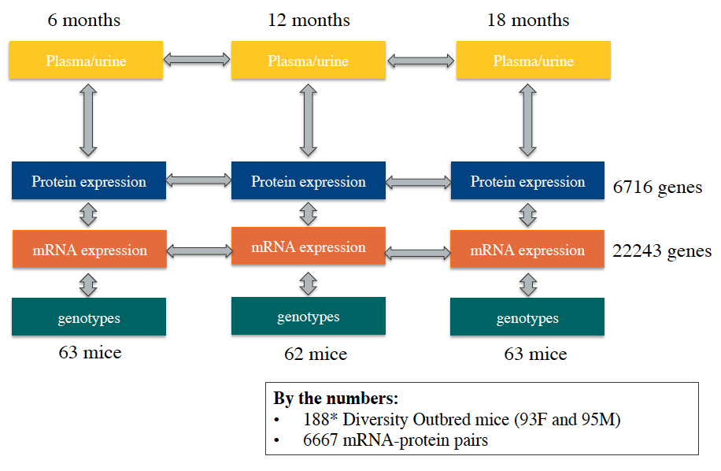
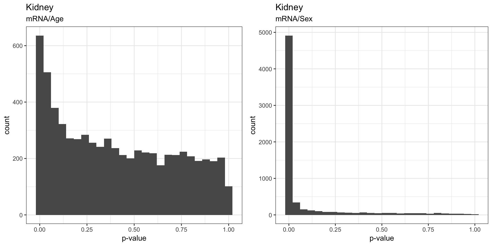
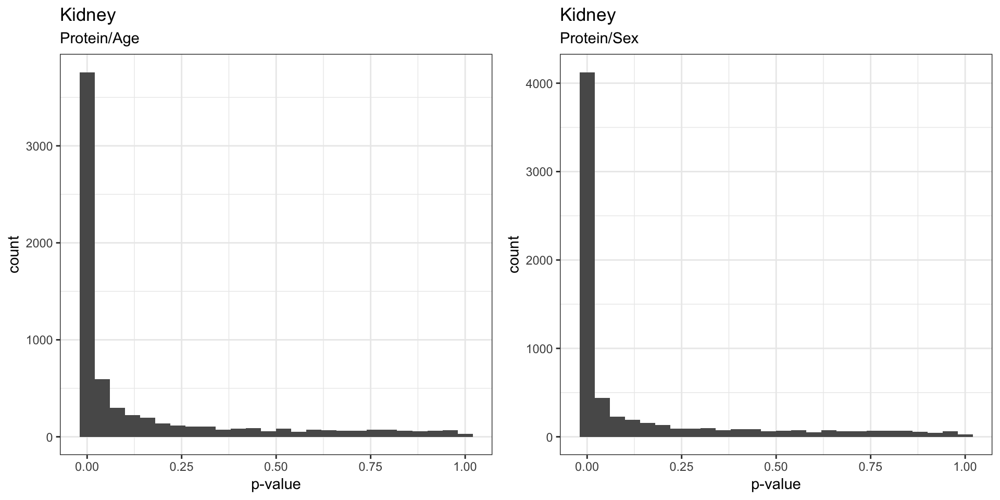
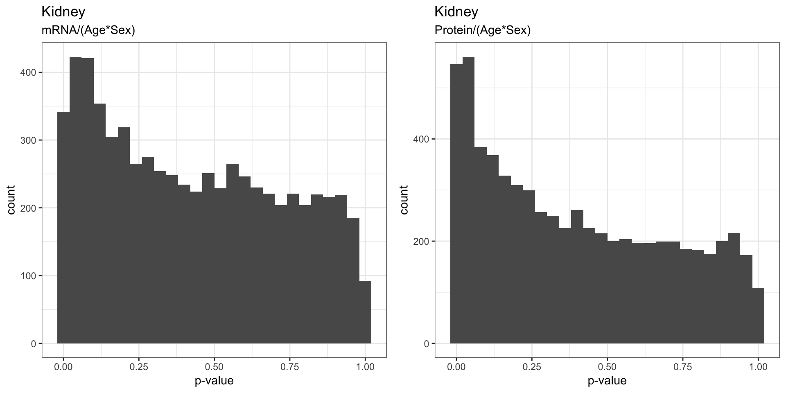
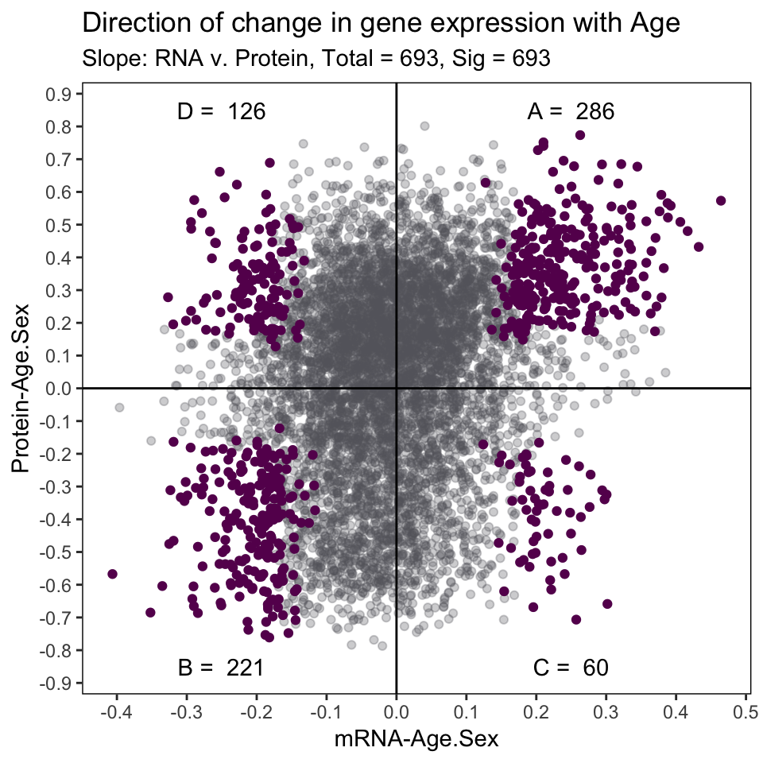
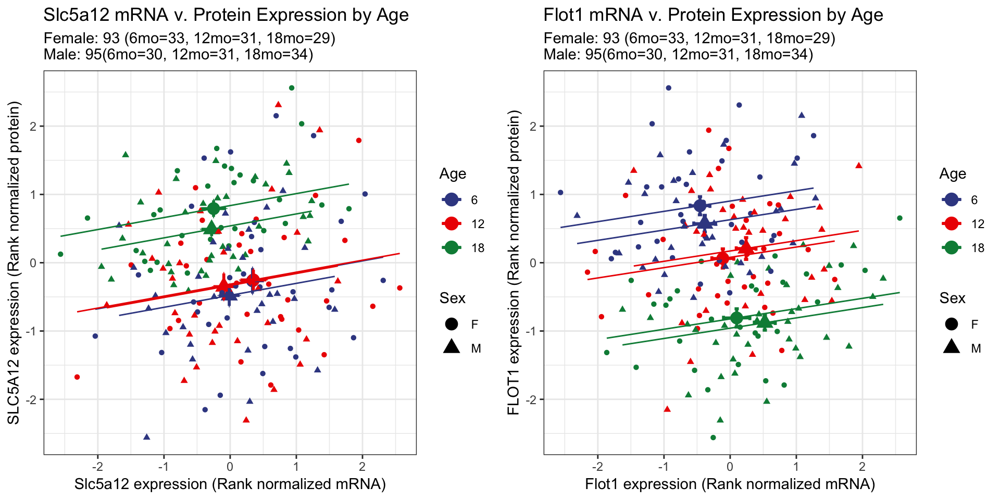

Reproducible results
TO DO LIST:
- upload data and scripts
- change paths to uploaded data
1 . Overall study design
We collected kidneys from 188 Diversity Outbred mice (93 females and 95 males) at 6, 12, and 18 months of age (63, 62, and 63 animals respectively). The right kidney was homogenized and an aliquot was used for RNA-sequencing and another for shotgun proteomics. A week prior to sacrifice, we also collected urine samples for renal physiological phenotyping (albumin, phosphate, and creatinine levels).

2 . mRNA and protein that change with age
We fitted a linear model for all 6,667 genes with both mRNA and protein expression information.
\[ y_{i} \sim Age + Sex + Generation \] From linear model, we recorded slope and p-value generated from each mRNA and protein in the downstream processes. Additionally for a subset of genes with both mRNA and protein information, we also extracted the slope coefficient from.
2.1 . Running linear regression script
The following bash script is designed to submit an Rscript to a cluster that utilizes PBS submission. You must submit the .Rdata and name the output file in this order.
The files needed are provided HERE:
- DO188b_kidney_noprobs.RData
- anova_tests_slope_pairs.R
- Rsubmit_args.sh
# Make sure correct paths and used and paste below into cluster to run:
qsub -v I="./Rdata/DO188b_kidney_noprobs.RData ./Anova_output/kidney_anova_slope_output.csv",script=anova_tests_slope_pairs Rsubmit_args.sh2.2 . Histograms of p-values
The figures below visualizes the distribution of p-values that indicates whether the gene have significant changes in mRNA/protein as a result of age, sex, and age:sex interaction.
We found that sex effect on mRNA was stronger than the effects of Age, which is to be expected. We also saw that the proteins seem to be strongly affected by both sex and age.
2.2.1 . Effects on mRNA

2.3 . Effects on protein

2.4 . Effects of Age:Sex interaction

3 . Direction of Change with Age
We can illustrate the direction of change in mRNA and protein expression with age using the slope calculated from the linear model in the previous section.

In our manuscript, we used clusterProfiler to identify enriched biological functions and pathways of each of the 4 significant cluster of genes. For more information please refer to our manuscript HERE. (needs link)
4 . The Ecological Fallacy
Previously we showed how mRNA and protein expression changed with age. We want to highlight a few genes to explain what is known as “The ecological fallacy”, whereby the correlation of the total population is not the same as individual age group correlation.

We picked Slc5a12 and Flot1 as the best examples to demonstrate this ecological fallacy.

At the whole population level, the mRNA expression of Slc5a12 decreased with age and the protein expression increased with age. However, when broken down by age groups, the mRNA and protein expressions are positively correlated. When were compare between the age groups we do not see a shift between 6 month and 12 months, but at 18 months of age the average of the group shifts to the top right. The upward shift indicates that the protein expression increased but the leftward shift indicates the decrease of mRNA expression.
In contrast to Slc5a12, Flot1 is an example where by the mRNA expression increases with age and the protein expression decreases with age at the whole population level. At the level of the individual age groups, we observe a bottom-right shift with an increase in age. The downward shift indicates a decrease in protein expression, and a rightward shift indicates a increase in mRNA expression with age.
5 . Relating changes in mRNA and protein to renal physiology
In addition to gene expression and protein expression quantification, we also measured metabolites in the urine samples (albumin, phosphate, and creatinine) collected from the same 188 animals 1 week prior to their sacrifice. From the analysis conducted in previous sections, we identified Slc34a1, Slc34a3, and Lrp2 in group D to be of particular interest. Genes in group D have decreasing mRNA expression and increasing protein expression increasing with age at the whole population level.
5.1 . Slc34a1 and Slc34a3 expression levels
5.1.1 . Global level
Slc34a1 and Slc34a3 each encode a phosphate co-transporter (NPT2C and NPT2A) in localized in the proximal tubule for phosphate reabsorption. For both genes we observe we confirmed global expression levels of decreasing mRNA and increasing protein levels for both females and males.

5.1.2 . Individual age group level
We also observe positive correlation between mRNA and protein levels at individual age groups. Both Slc34a1 and Slc34a3 show a shift towards the top-left corner with increasing age, which is reflective of the observations made at the whole population level.

5.1.3 . Slc34a1 and Slc34a3 compared to urinary phosphate levels
As expected for mediators of phosphate reabsorption, we confirmed an increase in Slc34a1 and Slc34a3 both lead to decreasing levels of urinary phosphate levels.

5.2 . Lrp2 expression levels
5.2.1 . Global levels
Lrp2 encodes for megalin, a receptor for albumin reabsorption also localized in the proximal tubule. Similar to Slc34a1 and Slc34a3 the global levels of Lrp2 mRNA and protein are respectively decreasing and increasing with age.

5.2.2 . Individual age group level
We also observe the global trend reflected individually with age, driven by the top-left shift with increasing age. Additionally we also observe overall higher expression level of both Lrp2 mRNA and protein in females (circle).

5.2.3 . Lrp2 compared to urinary albumin levels
We were able to measure albumin levels form 120 DO mice. 90 of these mice had urinary albumin levels < 1 mg/dL and 67 animals had 0 mg/dL or below detection levels of urinary albumin. This lack of detectable albumin heavily skewed our data as it can be seen in the plot below. As these DO animals were not specifically genetically engineered to develop renal failure, we only expect a few animals with albuminuria. In our cohort of 188 DO mice, we have 5 animals with microalbuminuria (> 30 mg/dL of urinary albumin).

6 . eQTL and pQTL to identifying age associated changes in expression.
Using mRNA expression (eQTL) and protein expression (pQTL) as phenotypes in a quantitative trait loci (QTL) mapping approach, we were able to identify regions that regulate age/sex-associated changes in gene expression.
For more information on QTL analyses, Karl Broman’s R/qtl2 user guide is great resource for understanding and getting started with QTL scans.
6.1 . Base R/qtl2 codes
We calculated 3 different models of QTL:
- Additive QTL : Identifies loci that regulate gene expression.
- Sex-interactive QTL : Identifies loci that regulate sex-associated changes in gene expression.
- Age-interactive QTL : Identifies loci that regulate age-associated changes in gene expression.
Simplistically the additive QTL calculates an additive model that takes into account age, sex, generation of the animals as additive covariates.
\[ Y_{i} \sim Age_{i} + Sex_{i} + Generatio_{i}n + QTL_{gi}\] Sex-interactive QTL calculates two models, additive model and sex-interactive model, whereby the interactive model incorporates and interactive term for Sex. The sex interactive LOD scores are calculated by subtracting the additive model from the sex-interactive model.
\[ Y_{i} \sim Age_{i} + Sex_{i} + Generation_{i} + QTL_{gi} + QTL_{gi} * Sex_{i}\]
Age-interactive QTL calculates two models, additive model and age-interactive model, whereby the interactive model incorporates and interactive term for Age. The age-interactive LOD scores are calculated by subtracting the additive model from the age-interactive model.
\[ Y_{i} \sim Age_{i} + Sex_{i} + Generation_{i} + QTL_{gi} + QTL_{gi} * Age_{i}\]
In R, the the basic R/qtl2 code used for both additive and interactive QTL scan are below.
# Load QTL2 library
library(qtl2)
library(qtl2convert)
# Load probs data
load("./RNAseq_data/DO188b_kidney.RData")
# Reformat from DOQTL format to meet qtl2 format specification
probs <- probs_doqtl_to_qtl2(genoprobs, snps, pos_column = "bp")
snps$chr <- as.character(snps$chr)
snps$chr[snps$chr=="X"] <- "20" #change to numeric for creating map later
map <- map_df_to_list(map = snps, pos_column = "bp")
# Create matrix for each model
## Additive
addcovar <- model.matrix(~ Sex + Age + Generation, data=annot.samples)
## Sex-interactive
sex_intcovar <- model.matrix(~ Sex, data = annot.samples)
## Age-interactive
age_intcovar <- model.matrix(~ Age, data = annot.samples)
# scan additive model:
LODadd <- scan1(genoprobs=probs,
kinship=Glist,
pheno=expr.protein[,p],
addcovar=addcovar[,-1],
cores=3,
reml=TRUE)
# scan full model for age-interaction:
LODint <- scan1(genoprobs=probs,
kinship=Glist,
pheno=expr.protein[,p],
addcovar=addcovar[,-1],
intcovar=age_intcovar[,-1], # replace with sex_intcovar for sex-interaction
cores=3,
reml=TRUE)
# get marker with maximum LOD score difference between full and additive scans:
maxMarker <- function(full, add){
diff <- as.data.frame(full)
colnames(diff) <- "FullLOD"
diff$AddLOD <- add[,1]
diff$IntAgeLODDiff <- diff$FullLOD - diff$AddLOD
max <- diff[which(diff$IntAgeLODDiff == max(diff$IntAgeLODDiff, na.rm = TRUE)[1])[1],]
max$IntAgeChr <- str_split_fixed(rownames(max),"_",2)[,1]
max$IntAgePos <- snps[snps$marker == rownames(max),]$bp
return(max)
}
Max <- maxMarker(full = LODint, add = LODadd)
}
# output
output <- output %>% mutate(
FullLOD = Max$FullLOD,
AddLOD = Max$AddLOD,
IntAgeChr = Max$IntAgeChr,
IntAgePos = Max$IntAgePos,
IntAgeLODDiff = Max$IntAgeLODDiff
)6.2 . Additive eQTL and pQTL
For every mRNA and pQTL we have expression from, we calculated the additive eQTL and pQTL models. We plotted the genomic position of the highest LOD score (y-axis) in relation to the genomic position of the gene (y-axis) for genes with LOD scores > 7.5.
We see strong clusters of eQTL and pQTL on the diagonal axis, indicating that a majority of gene expression are regulated locally (cis-QTL).

6.3 . Sex-interactive eQTL and pQTL
We plotted the sex-interactive eQTL and pQTL for genes with a LOD score > 7.5. Compared to the additive model, sex-associated changes in mRNA are less locally regulated, and we begin to see more distant eQTL peaks. Similarly sex-interactive pQTL show very little local regulation.

6.4 . Age-interactive eQTL and pQTL
We plotted the age-interactive eQTL and pQTL for genes with a LOD score > 7.5. Age-associated changes in gene and protein expression are mainly regulated by distant genes, and we begin to see dark vertical band. This vertical cluster of eQTL on distal chromosome 12, indicate that a gene/genes on chromosome 12 pleiotropically regulates the age-associated changes in mRNA expression of many genes. Similarly, in the pQTL global map, a distant band on distal chromosome 15 seem to have similar effects on age-associated changes in protein expression.

7 . Session Information
## [1] "Last updated:"## [1] "15 October, 2018"## R version 3.5.1 (2018-07-02)
## Platform: x86_64-apple-darwin15.6.0 (64-bit)
## Running under: macOS 10.14
##
## Matrix products: default
## BLAS: /Library/Frameworks/R.framework/Versions/3.5/Resources/lib/libRblas.0.dylib
## LAPACK: /Library/Frameworks/R.framework/Versions/3.5/Resources/lib/libRlapack.dylib
##
## locale:
## [1] en_US.UTF-8/en_US.UTF-8/en_US.UTF-8/C/en_US.UTF-8/en_US.UTF-8
##
## attached base packages:
## [1] grid stats graphics grDevices utils datasets methods
## [8] base
##
## other attached packages:
## [1] bindrcpp_0.2.2 ggsci_2.9 gridExtra_2.3 forcats_0.3.0
## [5] stringr_1.3.1 dplyr_0.7.6 purrr_0.2.5 readr_1.1.1
## [9] tidyr_0.8.1 tibble_1.4.2 ggplot2_3.0.0 tidyverse_1.2.1
##
## loaded via a namespace (and not attached):
## [1] Rcpp_0.12.19 cellranger_1.1.0 pillar_1.3.0 compiler_3.5.1
## [5] plyr_1.8.4 bindr_0.1.1 tools_3.5.1 digest_0.6.17
## [9] lubridate_1.7.4 jsonlite_1.5 evaluate_0.11 nlme_3.1-137
## [13] gtable_0.2.0 lattice_0.20-35 pkgconfig_2.0.2 rlang_0.2.2
## [17] cli_1.0.1 rstudioapi_0.8 yaml_2.2.0 haven_1.1.2
## [21] withr_2.1.2 xml2_1.2.0 httr_1.3.1 knitr_1.20
## [25] hms_0.4.2 rprojroot_1.3-2 tidyselect_0.2.4 glue_1.3.0
## [29] R6_2.3.0 readxl_1.1.0 rmarkdown_1.10 modelr_0.1.2
## [33] magrittr_1.5 backports_1.1.2 scales_1.0.0 htmltools_0.3.6
## [37] rvest_0.3.2 assertthat_0.2.0 colorspace_1.3-2 labeling_0.3
## [41] stringi_1.2.4 lazyeval_0.2.1 munsell_0.5.0 broom_0.5.0
## [45] crayon_1.3.4Copyright © 2018 Yuka Takemon. MIT license.